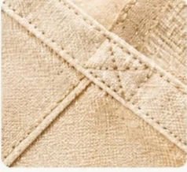

Bahan Tas Seminar: Perbandingan Spunbond, Blacu, dan Kanvas

Bahan tas seminar yang umum digunakan adalah spunbond, blacu, dan kanvas. Setiap material memiliki karakter berbeda dalam ketahanan, tampilan estetika, dan anggaran biaya.
📌 Ringkasan Inti Panduan:
- Spunbond cocok untuk seminar dengan kebutuhan tas ringan dan anggaran terbatas.
- Blacu memiliki tampilan natural yang sesuai untuk workshop dan kegiatan komunitas.
- Kanvas menjadi pilihan untuk tas seminar dengan kebutuhan struktur lebih kokoh.
- Ketahanan tas tidak hanya ditentukan bahan, tetapi juga konstruksi dan kualitas sambungan.
- Sampel fisik membantu memastikan bahan sesuai dengan kebutuhan acara.
🚚 Layanan Konveksi Tangan Pertama Malang: Pesan tas seminar custom spunbond, blacu, atau kanvas dengan MOQ mulai 50 pcs. Kami melayani kunjungan sampel ke workshop Kota Malang dan pengiriman kargo cepat ke seluruh Indonesia. Pelajari garansi mutu di Syarat & Ketentuan Pemesanan.
1. Apa Perbedaan Bahan Tas Seminar Spunbond, Blacu, dan Kanvas?
Perbedaan spunbond, blacu, dan kanvas terletak pada cara pembentukan material, karakter permukaan, ketebalan, kekuatan konstruksi, serta kesesuaian penggunaannya dalam seminar.
Pemilihan bahan merupakan salah satu keputusan terpenting sebelum melakukan pemesanan tas seminar custom. Ketiga material tersebut memiliki fungsi dasar yang sama, yaitu digunakan sebagai bahan pembentuk tas. Namun, struktur dan tampilannya tidak identik. Spunbond umumnya digunakan untuk tas nonwoven yang ringan. Blacu menawarkan permukaan kain dengan kesan natural. Sementara itu, kanvas sering dipilih untuk tas dengan kebutuhan ketahanan dan bentuk yang lebih kokoh.
| Aspek | Spunbond | Blacu | Kanvas |
|---|---|---|---|
| Struktur | Nonwoven (serat sintetis lembaran) | Kain tenun bertekstur kapas | Kain tenun anyaman rapat & tebal |
| Tampilan | Sederhana, praktis, banyak warna | Natural, krem / broken white hangat | Kasual elegan hingga eksklusif premium |
| Bobot | Sangat ringan | Ringan hingga menengah | Menengah hingga padat berbobot |
| Kustomisasi | Sablon manual warna solid | Sablon manual & cetak sesuai bahan | Sablon, transfer DTF warna, bordir komputer |
| Penggunaan | Seminar massal & expo umum | Workshop kreatif & kegiatan kampus | Corporate event, diklat, & paket VIP |
| Perawatan | Cukup dilap kering | Perlu mencuci manual hati-hati | Dapat dicuci & disetrika berkala |
Perbandingan tersebut menggambarkan karakter umum, bukan jaminan bahwa seluruh tas dengan bahan tertentu mempunyai kualitas sama. Kekuatan tas juga dipengaruhi ukuran, kerapian jahitan, teknik sambungan tali, dan berat muatan yang dibawa peserta.
2. Apa Itu Tas Seminar Spunbond?
Tas seminar spunbond merupakan tas berbahan nonwoven yang biasanya ringan, ekonomis, dan tersedia dalam berbagai warna untuk kebutuhan kegiatan berjumlah besar.
Spunbond banyak digunakan untuk goodie bag karena proses pembentukan materialnya berbeda dengan kain tenun. Serat polimer dibentuk menjadi lembaran melalui proses mekanis dan termal nonwoven. Salah satu bahan baku yang umum dipakai adalah polipropilena.
Kelebihan Spunbond
Spunbond memiliki beberapa karakter yang mendukung penggunaan dalam seminar:
- Bobot Ringan: Mudah disimpan, diangkut, ditata, dan dibagikan dalam jumlah ribuan pcs di meja registrasi.
- Variasi Warna Luas: Tersedia puluhan palet warna cerah yang dapat diselaraskan dengan identitas visual brand atau panitia.
- Biaya Produksi Ekonomis: Membantu kepanitiaan menghemat anggaran pengadaan tas dalam skala massal.
Kekurangan Spunbond
Tas spunbond tidak selalu sesuai untuk membawa barang berat. Ketahanan sangat bergantung pada gramasi bahan per meter persegi, metode penyambungan (press atau jahit), dan kualitas tali. Permukaan spunbond juga memiliki tampilan khas sintetis yang berbeda dari tekstur kain blacu atau kanvas alami.
Kapan Spunbond Digunakan?
Spunbond relevan untuk seminar singkat, sosialisasi program, pelatihan umum, kegiatan kampus, serta pembagian materi promosi di pameran. Pada referensi produk Goodiebag Custom, terdapat pilihan spunbond dengan spesifikasi 75-100 gsm. Angka gsm menunjukkan massa bahan per meter persegi, bukan kapasitas beban mutlak. Karena itu, pengujian konstruksi tetap diperlukan apabila tas akan digunakan untuk membawa barang yang relatif berat.
3. Mengapa Tas Seminar Blacu Cocok untuk Workshop?
Tas seminar blacu cocok untuk workshop karena memiliki tampilan natural, dapat dikustomisasi dengan desain sederhana, dan berpotensi digunakan kembali setelah acara berlangsung.
Blacu merupakan kain mentah (unbleached) yang sering digunakan untuk tas dengan kesan alami. Warna yang umum dijumpai adalah krem, putih gading, atau broken white dengan bintik serat kapas alami. Tekstur permukaannya memberikan karakter visual berkelas yang berbeda dari spunbond.
Keunggulan Tampilan Natural
Tas blacu sangat digemari untuk kegiatan yang mengusung tema kreatif, ramah lingkungan, dan edukasi. Contohnya adalah lokakarya seni, pelatihan pendidikan, seminar kampus, serta kegiatan komunitas. Logo satu warna atau ilustrasi sederhana bernuansa monokrom menghadirkan kesan hangat dan estetis.
Kemudahan Kustomisasi
Kain blacu sangat kompatibel dengan metode sablon pasta rubber atau sablon pigmen. Hasil akhir dipengaruhi jenis tinta, warna desain, dan kerapian teknik cetak. Untuk desain dengan banyak detail warna, vendor perlu memeriksa apakah metode cetak yang dipilih mampu mempertahankan detail gambar secara tajam.
Keterbatasan Blacu
Tidak semua kain blacu memiliki ketebalan dan kekuatan sama. Blacu yang relatif tipis memerlukan jahitan pengunci bar-tack ekstra apabila digunakan membawa dokumen tebal. Kain katun blacu juga berisiko menyusut bila dicuci air panas. Sebelum produksi, panitia sebaiknya memeriksa sampel fisik bahan dan hasil jahitan.
4. Kapan Tas Seminar Kanvas Menjadi Pilihan yang Tepat?
Tas seminar kanvas tepat dipertimbangkan ketika acara membutuhkan tas berstruktur kokoh, tampilan lebih eksklusif, dan kemampuan membawa perlengkapan yang relatif lebih berat.
Kanvas memiliki beragam jenis anyaman, mulai dari kanvas twill hingga marsoto tebal. Karakter kokoh tersebut memungkinkan pembuatan tas dengan desain berfitur lengkap, seperti resleting atas, saku depan kancing snap, alas samping (gusset), dan handle berbahan kulit sintetis.
Penggunaan untuk Seminar Perusahaan
Tas kanvas menjadi standar utama untuk corporate gathering, konferensi tahunan perusahaan, seminar profesional bursa saham, dan forum bisnis perbankan. Desainnya yang bergaya tote bag modern membuat peserta bangga menggunakannya kembali ke kantor atau mall.
Penggunaan untuk Peserta VIP
Paket peserta VIP sering memuat perlengkapan bernilai tinggi seperti notebook hardcover tebal, tumbler vakum 500 ml, dan plakat penghargaan. Tas kanvas memberikan rasa aman dan tampilan terhormat yang selaras dengan profil tamu kehormatan.
Kekurangan Kanvas
Kanvas memiliki harga bahan dan ongkos jahit yang lebih tinggi dibanding spunbond atau blacu. Karena itu, tas kanvas kurang efisien bila dialokasikan untuk ribuan peserta seminar gratis beranggaran minimal. Bobot kain yang lebih tebal juga sedikit memengaruhi total berat paket saat pengiriman kargo.

5. Apakah Tas Seminar Berbahan Kain Lebih Ramah Lingkungan?
Tas seminar berbahan kain berpotensi mendukung penggunaan berulang, tetapi dampak lingkungannya tetap bergantung pada proses produksi, frekuensi pemakaian, perawatan, dan pengelolaan akhir produk.
Aspek keberlanjutan perlu diperhatikan ketika memilih perlengkapan seminar. Namun, klaim ramah lingkungan tidak sebaiknya diberikan hanya karena tas terbuat dari kain tenun.
Menurut laporan United Nations Environment Programme (UNEP) pada April 2023, sekitar dua pertiga dari lebih 430 juta ton plastik yang diproduksi setiap tahun merupakan produk berumur pakai pendek. Sementara itu, dokumen UNEP 2025 memperkirakan hanya sekitar 9% plastik global yang benar-benar berhasil didaur ulang.
Data tersebut berkaitan dengan produksi plastik global. Spunbond polipropilena berbasis sintetis, sedangkan blacu dan kanvas katun memerlukan air dan energi saat proses pemintalan benang. Oleh sebab itu, tas seminar kain benar-benar menjadi pilihan ramah lingkungan apabila:
- Memiliki daya tahan tinggi dan dipakai berulang kali oleh peserta selama berbulan-bulan.
- Didesain fungsional tanpa grafis acara yang terlalu musiman atau mencolok.
- Diproduksi sesuai jumlah riil peserta tanpa meninggalkan sisa limbah berlebih.
Untuk memahami konteks keberlanjutan dan pengurangan limbah, pembaca dapat merujuk pada publikasi resmi UNEP mengenai pencemaran plastik.
6. Bagaimana Memilih Bahan Tas Seminar Berdasarkan Kebutuhan?
Pemilihan bahan tas seminar sebaiknya mempertimbangkan jenis acara, berat perlengkapan, alokasi anggaran, tampilan desain, dan kemungkinan penggunaan setelah kegiatan selesai.
- Seminar Massal Peserta Banyak: Spunbond 75–100 gsm memberikan efisiensi anggaran terbaik untuk memuat notebook tipis, brosur materi, dan pulpen.
- Workshop Kreatif & Pelatihan: Blacu natural broken white menghadirkan nuansa artistik dan fleksibel untuk komunitas edukasi.
- Konferensi Perusahaan & Diklat Kedinasan: Kanvas twill atau marsoto kokoh mencerminkan kredibilitas institusi formal.
- Seminar Ber-Merchandise Berat: Jika paket memuat tumbler stainless dan buku tebal, pilihlah kanvas atau blacu tebal dengan jahitan pengunci bar-tack ganda.
Pelajari panduan menyeluruh mengenai perencanaan ukuran dan isi suvenir di panduan lengkap tas seminar kit.
7. Apa Kesalahan yang Harus Dihindari Saat Memilih Bahan?
Kepanitiaan sering terjebak dalam beberapa kesalahan umum ketika menentukan material tas:
- Hanya Melihat Angka Gramasi / Harga Termurah: Menganggap semua kain kanvas sama tebalnya, padahal kanvas tipis 8 oz berbeda jauh dengan kanvas marsoto 14 oz.
- Mengabaikan Kompatibilitas Teknik Cetak: Memaksakan cetak gradasi separasi foto full color pada kain berserat kasar tanpa teknologi DTF yang tepat.
- Hanya Mengandalkan Foto Layar Kaca: Warna foto di monitor dapat terdistorsi pencahayaan. Meminta sampel bahan fisik selalu lebih akurat.
Butuh Bantuan Memilih Bahan Terbaik?
Dapatkan sampel fisik dan konsultasi gramasi kain langsung dari tim teknisi sakabag. Kunjungi workshop kami di Malang atau diskusikan kebutuhan pengadaan Anda secara daring.
8. FAQ tentang Bahan Tas Seminar
Kesimpulan Praktis
Spunbond, blacu, dan kanvas mempunyai karakteristik berbeda sehingga bahan tas seminar terbaik harus ditentukan berdasarkan kebutuhan penggunaan dan spesifikasi produk. Spunbond dipertimbangkan untuk kebutuhan ringan beranggaran hemat, blacu cocok untuk konsep natural, dan kanvas relevan untuk tampilan eksklusif berdaya tahan jangka panjang.
Butuh Bantuan Memilih Bahan Tas Seminar Anda?
Konsultasikan kebutuhan bahan, jumlah peserta, dan desain logo Anda bersama Goodiebag Malang. Dapatkan sampel foto dan penawaran harga terbaik.
Konsultasi Bahan via WhatsApp (+62 821-3108-7971)Artikel & Referensi Terkait

Panduan Tas Seminar Kit: Bahan, Isi, & Tips Memilih
Ulasan menyeluruh pemilihan jenis tas seminar, panduan budget, dan checklist persiapan souvenir acara.

Isi Paket Seminar Kit: Pilihan Simple, Standard, dan Premium
Rekomendasi paket perlengkapan peserta seminar dari opsi hemat hingga suvenir eksklusif VIP.